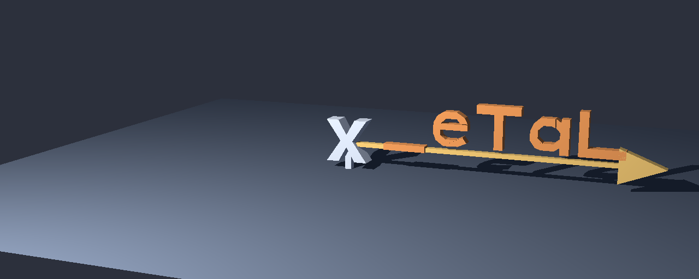
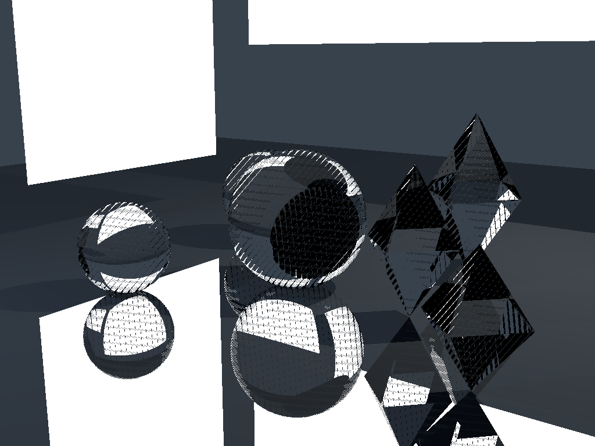

Ray tracing
Demos and recorded videos from X_eTaL scene programs. A native RTX still and the earlier CPU animation are ready; the glass and benchmark scenes are in development.
A fixed X and a rotating _eTaL vane
The silver X stays still. The copper letters, shaft and arrowhead turn together around its vertical axis. The camera, post and floor stay fixed.


Shared X_eTaL math on RTX 5060 Ti; 196 launches for the complete scene. The experimental scalar-channel adapter traces each pixel three times. The same program passed CPU validation at 8 × 4; the CPU still below uses a different library snapshot and is not a matched timing baseline. These timings are individual observations. Reproduce with just ray-render-regions --width 1280 --height 512.
Source code
Shared-library cross-references (current docs): Scene xref Extrusion xref RayTrace xref Vector3 xref Scene macro xref Extrusion macro xref
Sources used for this recording, library revision 8bd438d: Scene source Extrusion source RayTrace source Vector3 source Scene macro source Extrusion macro source
CPU/GPU image validation downloads (16 × 8)
The exact same X_eTaL program produced both TIFFs. These small images test correctness, rather than presentation quality or performance. Maximum raw linear RGB error: 3.45e-07; maximum display RGB error: 1.83e-07. RGB8 pixels are identical.


Linear radiance is preserved before the shared X_eTaL display conversion. The host only quantizes RGB8 and encodes the images. Reproduce with just ray-image-pair.
Source code
Shared-library cross-references (current docs): RayTrace xref Scene xref Extrusion xref Scene macro xref Extrusion macro xref
Sources used for this recording, library revision 8bd438d: RayTrace source Scene source Extrusion source Scene macro source Extrusion macro source
Earlier native CPU still and sources

CPU library snapshot a2d4de1; language abdd371. Reproduce with just ray-hires-cpu --libraries-ref a2d4de1359295471afff509215c078da9c25c963. The video below is the earlier low-resolution recording.
Source code
This full-frame equivalent describes the CPU image. The master archive contains the exact executed strip programs.
Shared-library cross-references (current docs): Scene xref Extrusion xref RayTrace xref Vector3 xref Scene macro xref Extrusion macro xref
Sources used for this recording, library revision a2d4de1: Scene source Extrusion source RayTrace source Vector3 source Scene macro source Extrusion macro source
24 frames · 160 × 64 pixels · 6 fps. This is a low-resolution CPU preview, with a point light and hard shadows. It plays recorded pixels; the browser does not trace rays. Letter backs naturally appear reversed during the turn.

Inspect individual rendered frames
Download this PNG frameSource code
Exact per-frame programs and angles are preserved in the animation master archive.
Shared-library cross-references (current docs): Scene xref Extrusion xref RayTrace xref Vector3 xref Scene macro xref Extrusion macro xref
Sources used for this recording, library revision e7140be: Scene source Extrusion source RayTrace source Vector3 source Scene macro source Extrusion macro source
Scene source used for this recording
#!/usr/bin/env xetal
## Original weather-vane scene; all geometry, transforms and shading run in X_eTaL.
## General Scene/Extrusion/RayTrace libraries, MIT, pinned by XETAL_LIBRARIES_COMMIT.
"sc:" u_se< "Scene"
"ex:" u_se< "Extrusion"
"rt:" u_se< "RayTrace"
"logo" sc:s_cene< "group fixed objects x\ngroup vane objects tail pivot 0 0.5 0\nobject x extrude X depth 0.4 material silver position -0.5 0 0\nobject tail extrude _eTaL depth 0.24 material copper position 0.9 0.55 0\nmaterial silver color 0.65 0.75 0.9 reflection 0\nmaterial copper color 0.8 0.32 0.1 reflection 0\nmaterial brass color 0.85 0.58 0.18 reflection 0\nmaterial floor color 0.09 0.12 0.18 reflection 0\nlight key position -3 8 12 color 850 800 750\ncamera eye 8 5 20 target 0 0.5 0 up 0 1 0 fov 0.30\n"
width := 160
height := 64
angle := 0.0
## Shaft and arrow point along +x in the vane's local frame.
shaft := 0.16 ex:e_xtrude o_\ 4 2 r_eshape 0.2 0.36 6.4 0.36 6.4 0.46 0.2 0.46
head := 0.24 ex:e_xtrude o_\ 3 2 r_eshape 6.2 0.02 7.2 0.41 6.2 0.8
post := 0.18 ex:e_xtrude o_\ 4 2 r_eshape -0.08 -0.2 0.08 -0.2 0.08 0.5 -0.08 0.5
floor := 2 3 3 r_eshape -8.0 -0.2 -8.0 8.0 -0.2 8.0 8.0 -0.2 -8.0 -8.0 -0.2 -8.0 -8.0 -0.2 8.0 8.0 -0.2 8.0
base := logotriangles c_at shaft c_at head c_at post c_at floor
materials := logomaterialids c_at ((t_ally shaft) r_eshape 3) c_at ((t_ally head) r_eshape 3) c_at ((t_ally post) r_eshape 1) c_at 2 r_eshape 4
groups := logogroupids c_at ((t_ally shaft) r_eshape 3) c_at ((t_ally head) r_eshape 3) c_at ((t_ally post) r_eshape 2) c_at 2 r_eshape 1
transforms := (((logopivots sc:r_otateGroup 3)_ angle)_ logotransforms)
triangles := ((base sc:a_pplyGroups groups)_ transforms)
pixels := r_ange (width * height)
origins := logocamera rt:o_rigins (width * height)
directions := ((logocamera rt:r_ays (width c_at height))_ pixels)
clip := 1e-6 100.0 1e-10 1e-5
environment := 2 3 r_eshape 0.08 0.09 0.12 0.025 0.03 0.045
## Direct diffuse light and hard shadows for this first CPU animation.
linear := (((((((clip rt:s_hade triangles)_ materials)_ logomaterials)_ logolights)_ environment)_ origins)_ directions)
1.0 rt:s_rgb linear
Computed by the X_eTaL CPU evaluator, using shared Scene, Extrusion and RayTrace libraries. Language pin abdd371; library pin e7140be. Reproduce with just ray-animate-cpu. The separate tiny two-triangle diagnostic agrees on CPU and RTX OpenCL; this animation is a CPU result.
Pipe fly-through
Fly through open pipes on a ground plane beneath a blue sky. After the first pipe, a red sphere appears on the right; after the second, a gold pyramid appears on the left. The repeating scene flows continuously back into the first view.
Native 640 × 360 · 15 fps · 12 seconds · GPU-ray-traced frames, one sample per pixel (no antialiasing). Select the animation for the full-size viewer.
Source code
The recorded programs match this video. The current authoring scene can evolve; the Python driver orchestrates batches and encodes pixels.
Shared-library cross-references (current docs): RayTrace xref Vector3 xref
Sources used for this recording, library revision 8bd438d: RayTrace source Vector3 source
Uncompressed frame masters and rendering source
Every frame is independently ray traced in X_eTaL. Six frames share each resident GPU batch; the scene stays on the GPU between batches. These are opaque faceted shapes with direct light and hard shadows, one sample per pixel. The browser plays recorded frames. The final endpoint was rendered again and matches the first frame; it is excluded from playback to avoid a repeated-frame pause.
Ray-tracing functionGlass spheres and crystals

Native 1024 × 768 RTX transport preview. One sample per pixel, four interactions. Structured sampling bands and unresolved black paths remain; this is not the polished glass milestone.

Source code
Shared-library cross-references (current docs): Scene xref Glass xref RayTrace xref Vector3 xref Scene macro xref
Sources used for this recording, library revision 8bd438d: Scene source Glass source RayTrace source Vector3 source Scene macro source
Test / benchmark scene
A Cornell Box comparison will use matched scene and camera settings, with reference and X_eTaL renders side by side. Conversion and rendering are pending. The illustration is not a ray-traced result.
Validation plan